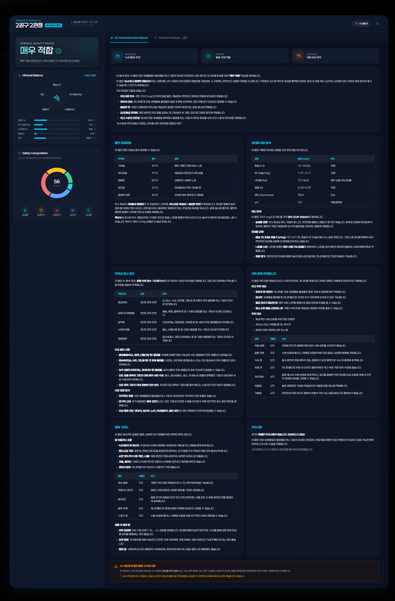
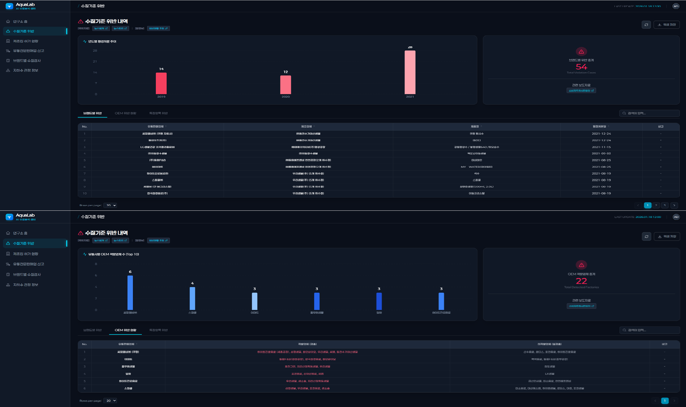
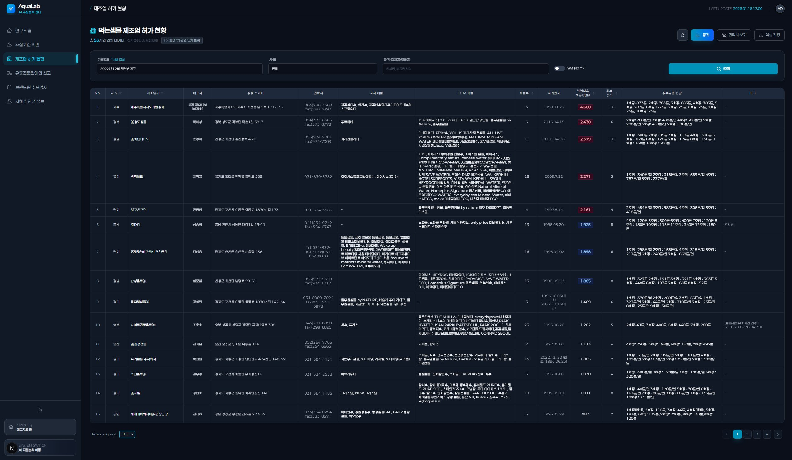
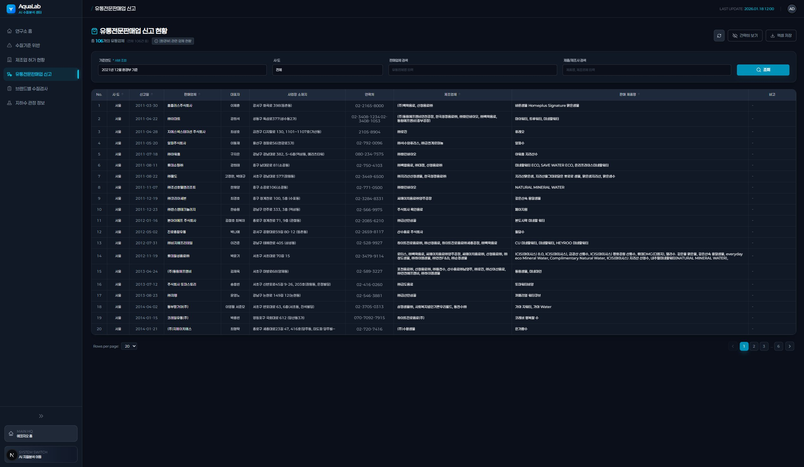
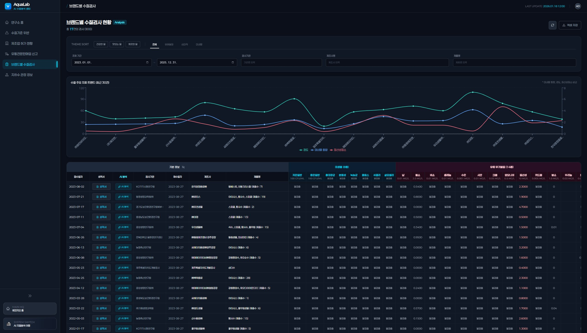
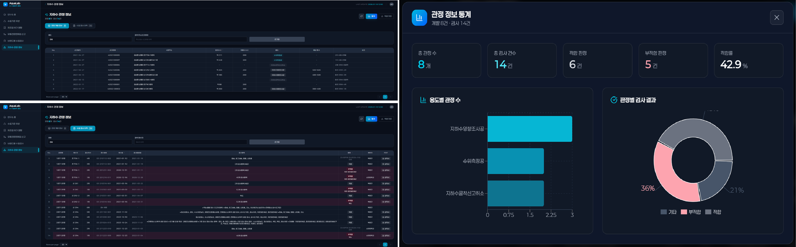

MSoftech · May 2024 – Dec 2024
A B2B water quality analysis platform that evaluates groundwater market value through 4 AI Agents and 56 inspection criteria — generating comprehensive reports with mineral profiling, safety scoring, and branding strategy recommendations for bottled water development.
AI AquaLab is a data-driven platform built for groundwater developers entering the bottled water market. It integrates public data from Korea's Ministry of Environment (MOE) and KIGAM standards to provide a unified view of water quality violations, manufacturer permits, distribution registries, and brand-level quality inspections.
The core value lies in the AI Analysis Report — powered by 4 sequential Agents (Mineral, Hazard, Suitability, Report), the system evaluates raw water quality data across 56 criteria and generates a structured 7-section report covering mineral balance, safety composition, usage recommendations, and branding potential. This report serves as a ready-made sales tool for developers to demonstrate their water's competitive value to prospective manufacturers.
Building AI AquaLab required far more than engineering. MSoftech independently conducted deep industry research — studying water quality regulations, manufacturing permit structures, distribution laws, and groundwater development practices — before designing a single screen. Every data model, every AI evaluation criterion, and every report section is grounded in real regulatory and market knowledge.
The platform's core output — a structured 7-section AI report that transforms raw water quality data into actionable market intelligence. Each report evaluates mineral composition, safety metrics, target consumer segments, and branding potential, serving as a ready-made sales tool for groundwater developers.






The system follows a linear data pipeline — ingesting public water quality data from MOE and KIGAM sources through the Spring Boot API layer, then routing it through a 4-Agent sequential AI pipeline (Mineral → Hazard → Suitability → Report) to generate a structured 7-section analysis report. All results are validated against KR standards before being persisted and visualized on the Data Center dashboard.
Service Flow